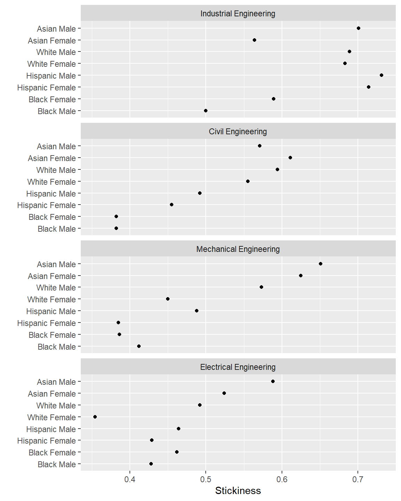
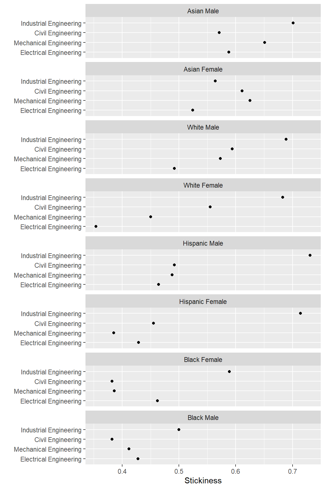

This article is written with novice R users in mind, so there is much detail that experienced users can skip.
Packages used in this article:
Many persistence metrics can be organized as multiway data in which there is is one quantitative variable and two categorical variables. To quote Bill Cleveland (1993),
the quantitative variable is a response, and the goal is to study how it depends on the categorical variables, which are factors. What distinguishes multiway data is the cross-classification of the categorical variables; there is a value of the response for each combination of levels of the two categorical variables.
We’ll use the stickiness metric to illustrate multiway graphs and data tables. Stickiness is the ratio of the number of students graduating in a program to the number of students ever enrolled in that program (Ohland et al. 2012).
exa_stickiness is a sample dataset included with midfieldr:
# an example dataset exa_stickiness #> # A tibble: 54 x 6 #> program race sex ever grad stick #> <chr> <chr> <chr> <int> <int> <dbl> #> 1 Civil Engineering Asian Female 22 11 0.5 #> 2 Civil Engineering Asian Male 53 24 0.453 #> 3 Civil Engineering Black Female 71 21 0.296 #> 4 Civil Engineering Black Male 131 39 0.298 #> 5 Civil Engineering Hispanic Female 15 5 0.333 #> 6 Civil Engineering Hispanic Male 85 30 0.353 #> 7 Civil Engineering International Male 20 5 0.25 #> 8 Civil Engineering Native American Male 7 3 0.429 #> # ... with 46 more rows
The stickiness value stick is the quantitative variable we want. One category is the academic program variable. The second category, race_sex, will have to be constructed by combining the race and sex variables.
We use:
str_c() to combine the two stringsmutate() to add a new columnselect() to select only the three columns needed for the multiway# combine two variables into one stickiness <- exa_stickiness %>% mutate(race_sex = stringr::str_c(race, sex, sep = " ")) %>% select(program, race_sex, stick) %>% glimpse() #> Rows: 54 #> Columns: 3 #> $ program <chr> "Civil Engineering", "Civil Engineering", "Civil Engineeri... #> $ race_sex <chr> "Asian Female", "Asian Male", "Black Female", "Black Male"... #> $ stick <dbl> 0.500, 0.453, 0.296, 0.298, 0.333, 0.353, 0.250, 0.429, 0....
Our glimpse() of the data frame shows that we have two categorical variables and one quantitative variable, exactly the form needed.
multiway_order() transforms the character variables program and race_sex into factors and orders the levels of the two factors by the relevant medians.
# convert the data to a multiway structure stickiness <- multiway_order(stickiness) %>% glimpse() #> Rows: 54 #> Columns: 3 #> $ program <fct> Civil Engineering, Civil Engineering, Civil Engineering, C... #> $ race_sex <fct> Asian Female, Asian Male, Black Female, Black Male, Hispan... #> $ stick <dbl> 0.500, 0.453, 0.296, 0.298, 0.333, 0.353, 0.250, 0.429, 0....
glimpse() shows that the two categorical variables are factors.
Optionally, using the return_medians argument, the function returns the median values used in ordering the factors. By arranging the rows of the data frame by program and race_sex factors, we can see that they are ordered by the medians.
# return the median stickiness value for both categories df <- multiway_order(stickiness, return_medians = TRUE) %>% arrange(program, race_sex) %>% print() #> # A tibble: 54 x 5 #> program race_sex stick med_program med_race_sex #> <fct> <fct> <dbl> <dbl> <dbl> #> 1 Mechanical Engineering Other Female 0.154 0.351 0.214 #> 2 Mechanical Engineering Native American Male 0.263 0.351 0.263 #> 3 Mechanical Engineering Hispanic Female 0.25 0.351 0.292 #> 4 Mechanical Engineering Black Male 0.326 0.351 0.328 #> 5 Mechanical Engineering Native American Female 0.333 0.351 0.333 #> 6 Mechanical Engineering Other Male 0.4 0.351 0.352 #> 7 Mechanical Engineering Hispanic Male 0.351 0.351 0.356 #> 8 Mechanical Engineering Black Female 0.327 0.351 0.364 #> # ... with 46 more rows
These values can be useful in discussion and for adding median reference lines to a graph.
We use conventional ggplot2 functions to create the multiway graphs. By previously ordering the levels of the factors, we have structured the data so that the rows and panels of the multiway graph are ordered by the appropriate medians.
For the novice R user, a brief description of the ggplot2 functions:
aes() assigns stick to the x-axis and race_sex to the y-axis.facet_wrap() conditions the plot by program, creating one panel (facet) per program.as.table = FALSE lays the panels out like a plot with the highest value at the top.geom_point() assigns point data markers.labs() assigns axis labels.theme_midfield() controls the appearance of the plot, based on a slightly edited theme_minimal().ggplot(data = stickiness, aes(x = stick, y = race_sex)) + facet_wrap(vars(program), ncol = 1, as.table = FALSE) + geom_point(na.rm = TRUE) + labs(x = "Stickiness", y = "") + theme_midfield()

As Cleveland notes, “We can more effectively compare values within a panel than values between panels.” This graph permits a direct visual comparison of how stickiness varies by race and sex for a particular major. .
The previous graph does not facilitate visual comparisons of members of the same race-sex group. As Cleveland says,
Because of this asymmetry, it is often important to explore multiway data by as many multiway dot plots as there are categorical variables, with each variable assigned once to the levels [rows of the panels].
To create the dual multiway graph, we swap the roles of the rows and panels. Where before we had
y = race_sex and facet_wrap(~ program...
now we have
y = program and facet_wrap(~ race_sex...
ggplot(stickiness, aes(x = stick, y = program)) + facet_wrap(vars(race_sex), ncol = 1, as.table = FALSE) + geom_point(na.rm = TRUE) + labs(x = "Stickiness", y = "") + theme_midfield()

This graph permits a direct visual comparison of how stickiness varies by major for one group of students.
When discussing the potential stories in multiway data, it is often convenient to have a data table at hand. Such tables facilitate discussion and are occasionally appropriate to include in a publication for editors or reviewers who want to see the exact values underlying the data graphics.
Starting with the example data, the first thing to do before tabulating is to reduce the significant figure to an easily-read number and arrange the rows to facilitate looking up a number.
stickiness_table <- exa_stickiness %>% mutate(stick = round(stick, 2)) %>% arrange(program, sex, race)
In many cases we might stop here and print the table for discussion purposes.
kable(stickiness_table, caption = "Stickiness metric")
| program | race | sex | ever | grad | stick |
|---|---|---|---|---|---|
| Civil Engineering | Asian | Female | 22 | 11 | 0.50 |
| Civil Engineering | Black | Female | 71 | 21 | 0.30 |
| Civil Engineering | Hispanic | Female | 15 | 5 | 0.33 |
| Civil Engineering | Other | Female | 11 | 1 | 0.09 |
| Civil Engineering | White | Female | 441 | 192 | 0.44 |
| Civil Engineering | Asian | Male | 53 | 24 | 0.45 |
| Civil Engineering | Black | Male | 131 | 39 | 0.30 |
| Civil Engineering | Hispanic | Male | 85 | 30 | 0.35 |
| Civil Engineering | International | Male | 20 | 5 | 0.25 |
| Civil Engineering | Native American | Male | 7 | 3 | 0.43 |
| Civil Engineering | Other | Male | 29 | 8 | 0.28 |
| Civil Engineering | Unknown | Male | 10 | 4 | 0.40 |
| Civil Engineering | White | Male | 1480 | 708 | 0.48 |
| Electrical Engineering | Asian | Female | 50 | 22 | 0.44 |
| Electrical Engineering | Black | Female | 180 | 72 | 0.40 |
| Electrical Engineering | Hispanic | Female | 24 | 6 | 0.25 |
| Electrical Engineering | International | Female | 11 | 4 | 0.36 |
| Electrical Engineering | Other | Female | 11 | 3 | 0.27 |
| Electrical Engineering | White | Female | 244 | 74 | 0.30 |
| Electrical Engineering | Asian | Male | 253 | 120 | 0.47 |
| Electrical Engineering | Black | Male | 379 | 130 | 0.34 |
| Electrical Engineering | Hispanic | Male | 89 | 32 | 0.36 |
| Electrical Engineering | International | Male | 83 | 46 | 0.55 |
| Electrical Engineering | Native American | Male | 12 | 1 | 0.08 |
| Electrical Engineering | Other | Male | 23 | 7 | 0.30 |
| Electrical Engineering | Unknown | Male | 11 | 4 | 0.36 |
| Electrical Engineering | White | Male | 1636 | 698 | 0.43 |
| Industrial Engineering | Asian | Female | 49 | 22 | 0.45 |
| Industrial Engineering | Black | Female | 121 | 56 | 0.46 |
| Industrial Engineering | Hispanic | Female | 12 | 5 | 0.42 |
| Industrial Engineering | International | Female | 7 | 4 | 0.57 |
| Industrial Engineering | Other | Female | 8 | 4 | 0.50 |
| Industrial Engineering | White | Female | 312 | 172 | 0.55 |
| Industrial Engineering | Asian | Male | 88 | 47 | 0.53 |
| Industrial Engineering | Black | Male | 151 | 50 | 0.33 |
| Industrial Engineering | Hispanic | Male | 34 | 19 | 0.56 |
| Industrial Engineering | International | Male | 30 | 18 | 0.60 |
| Industrial Engineering | Other | Male | 10 | 4 | 0.40 |
| Industrial Engineering | White | Male | 617 | 354 | 0.57 |
| Mechanical Engineering | Asian | Female | 38 | 15 | 0.40 |
| Mechanical Engineering | Black | Female | 104 | 34 | 0.33 |
| Mechanical Engineering | Hispanic | Female | 20 | 5 | 0.25 |
| Mechanical Engineering | Native American | Female | 6 | 2 | 0.33 |
| Mechanical Engineering | Other | Female | 13 | 2 | 0.15 |
| Mechanical Engineering | Unknown | Female | 6 | 3 | 0.50 |
| Mechanical Engineering | White | Female | 426 | 141 | 0.33 |
| Mechanical Engineering | Asian | Male | 171 | 82 | 0.48 |
| Mechanical Engineering | Black | Male | 267 | 87 | 0.33 |
| Mechanical Engineering | Hispanic | Male | 111 | 39 | 0.35 |
| Mechanical Engineering | International | Male | 55 | 26 | 0.47 |
| Mechanical Engineering | Native American | Male | 19 | 5 | 0.26 |
| Mechanical Engineering | Other | Male | 70 | 28 | 0.40 |
| Mechanical Engineering | Unknown | Male | 19 | 9 | 0.47 |
| Mechanical Engineering | White | Male | 2600 | 1166 | 0.45 |
Were to include a table in a publication, we might choose to
program variable to avoid repeating the term “Engineering”stickiness_table <- stickiness_table %>% select(program, race, sex, stick) %>% mutate(program = str_replace(program, " Engineering", "")) %>% select("Program" = program, "Race" = race, "Sex" = sex, "Stickiness" = stick) %>% spread(Program, Stickiness) %>% arrange(Sex, Race)
And print the table to our output document.
kable(stickiness_table, caption = "Stickiness metric")
| Race | Sex | Civil | Electrical | Industrial | Mechanical |
|---|---|---|---|---|---|
| Asian | Female | 0.50 | 0.44 | 0.45 | 0.40 |
| Black | Female | 0.30 | 0.40 | 0.46 | 0.33 |
| Hispanic | Female | 0.33 | 0.25 | 0.42 | 0.25 |
| International | Female | NA | 0.36 | 0.57 | NA |
| Native American | Female | NA | NA | NA | 0.33 |
| Other | Female | 0.09 | 0.27 | 0.50 | 0.15 |
| Unknown | Female | NA | NA | NA | 0.50 |
| White | Female | 0.44 | 0.30 | 0.55 | 0.33 |
| Asian | Male | 0.45 | 0.47 | 0.53 | 0.48 |
| Black | Male | 0.30 | 0.34 | 0.33 | 0.33 |
| Hispanic | Male | 0.35 | 0.36 | 0.56 | 0.35 |
| International | Male | 0.25 | 0.55 | 0.60 | 0.47 |
| Native American | Male | 0.43 | 0.08 | NA | 0.26 |
| Other | Male | 0.28 | 0.30 | 0.40 | 0.40 |
| Unknown | Male | 0.40 | 0.36 | NA | 0.47 |
| White | Male | 0.48 | 0.43 | 0.57 | 0.45 |
Cleveland, William S. 1993. Visualizing Data. Summit, NJ: Hobart Press.
Ohland, Matthew, Marisa Orr, Richard Layton, Susan Lord, and Russell Long. 2012. “Introducing Stickiness as a Versatile Metric of Engineering Persistence.” In Proceedings of the Frontiers in Education Conference, 1–5.